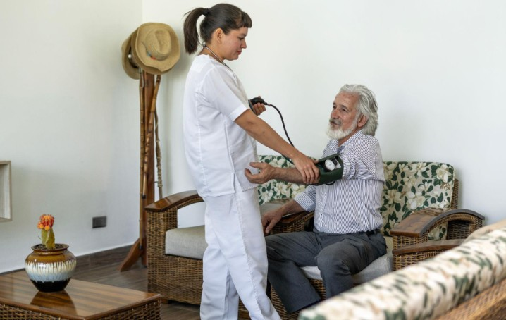
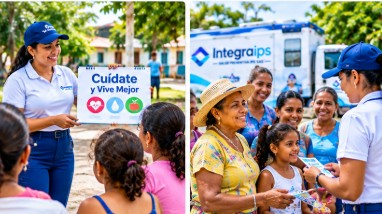
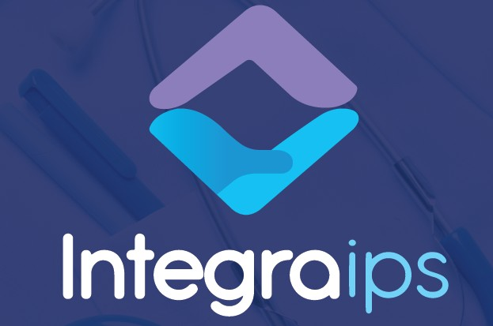
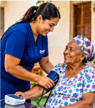
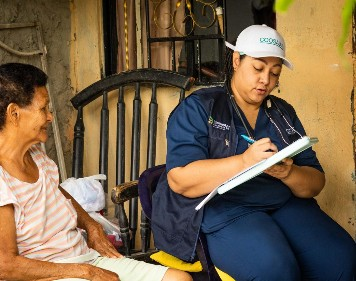
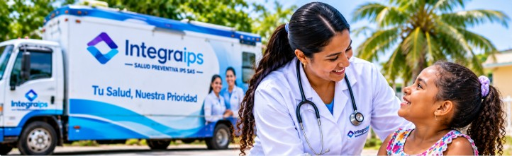
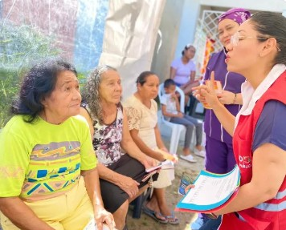

Misión
Prestar servicios de salud humanizados y con enfoque preventivo, a través de la consulta externa, la atención domiciliaria y la atención extramural, acercando el cuidado a las personas y comunidades del Atlántico y del Magdalena.
Desde Barranquilla, con cobertura en Atlántico y Magdalena, acompañamos a pacientes, familias, EPS, entidades territoriales y empresas a través de tres líneas complementarias: consulta externa, Home Care y atención extramural.
Integramos la atención en el consultorio, en el hogar y en la comunidad para que la salud llegue a donde las personas la necesitan.
Valoración, diagnóstico, terapias y seguimiento con un enfoque cercano.

Atención domiciliaria con acompañamiento humano y orientación a la familia.

Jornadas comunitarias y unidad móvil para acercar la prevención a cada municipio.
INTEGRA Salud Preventiva IPS SAS es una institución prestadora de servicios de salud que trabaja desde Barranquilla, con cobertura en los departamentos del Atlántico y del Magdalena.
Organizamos nuestra atención en tres líneas complementarias —consulta externa, Home Care y atención extramural— para acompañar a las personas en el consultorio, en su hogar y en su comunidad. Nuestro enfoque combina la atención clínica con la promoción de la salud y la prevención de la enfermedad.
Los principios que orientan nuestra forma de cuidar a las personas, las familias y las comunidades del Caribe colombiano.

Prestar servicios de salud humanizados y con enfoque preventivo, a través de la consulta externa, la atención domiciliaria y la atención extramural, acercando el cuidado a las personas y comunidades del Atlántico y del Magdalena.
Ser reconocidos como una IPS referente en el Caribe colombiano por integrar la atención en el consultorio, el hogar y el territorio, con calidez humana y compromiso con la salud preventiva.
Trato digno, cálido y cercano con cada persona.
Valoramos la dignidad, la diversidad y las decisiones de cada paciente.
Actuamos con transparencia, honestidad y responsabilidad profesional.
Buscamos la mejora continua en cada atención.
Acercamos la salud a todas las personas y comunidades, sin distinción.
Cumplimos con pacientes, familias y aliados.
Contribuimos al bienestar de los territorios donde trabajamos.
Valoramos, diagnosticamos y acompañamos la salud de nuestros pacientes, articulando la medicina general con las especialidades, las terapias y la toma de muestras de laboratorio.
Valoración integral, orientación y seguimiento de la salud.
Atención del adulto con enfermedades crónicas o de manejo integral.
Atención especializada de la salud de los riñones.
Atención del sistema urinario y de la salud masculina.
Acompañamiento profesional para el bienestar emocional.
Valoración y tratamiento médico especializado en salud mental.
Complementamos la consulta médica con terapias y toma de muestras de laboratorio.
Nuestro modelo de Home Care lleva la atención en salud al hogar del paciente, con un acompañamiento cercano que da continuidad al cuidado y orienta a la familia en cada paso.
Cuidar en casa permite que el paciente permanezca en un entorno conocido, rodeado de los suyos, mientras recibe atención profesional y humana.

Servicios de salud prestados en el domicilio, respetando la rutina y el espacio del paciente.
Un equipo que acompaña al paciente de manera cercana durante su proceso de atención.
Seguimiento coordinado para que la atención no se interrumpa entre el consultorio y la casa.
Nos contacta el paciente, su familia o la entidad responsable.
Revisamos la necesidad y explicamos el proceso a seguir.
Programamos la atención en el domicilio.
Acompañamos la evolución y orientamos a la familia.

La familia es parte del cuidado: brindamos orientación para acompañar mejor al paciente en casa. Consulte con nuestro equipo los servicios domiciliarios disponibles para su caso.
Con nuestra Unidad Móvil de Salud y jornadas comunitarias acercamos la prevención y la atención a municipios, barrios y comunidades del Atlántico y del Magdalena.

Consulta médica durante las jornadas extramurales.
Apoyo a la detección temprana del cáncer de mama.
Tamizaje de cáncer de cuello uterino.
Prueba de apoyo a la detección temprana del cáncer de próstata.
Orientación y servicios de planificación familiar.
Toma de muestras para exámenes de laboratorio.
Actividades educativas de promoción y prevención.
Atención y procedimientos de enfermería.
Acompañamos a las comunidades con orientación en salud, hábitos saludables y detección temprana.

Espacios de orientación en comunidades, barrios y municipios para que las personas conozcan y cuiden mejor su salud.
Tamizajes como mamografía, citología y antígeno de próstata (PSA) que permiten actuar a tiempo.
Orientación en planificación familiar, autocuidado y prevención de la enfermedad.
Atención cercana en el consultorio, en casa o en su comunidad.
Tres líneas de servicio complementarias para su población afiliada.
Jornadas extramurales y acciones de salud pública en el territorio.
Servicios de salud y prevención para sus colaboradores.
Conozca cómo nuestras tres líneas de servicio pueden apoyar a su población o a su organización.
Consulte la información pública de la IPS organizada por categorías. Los documentos se publicarán una vez sean validados por la institución.
Datos generales de la entidad.
Políticas adoptadas por la IPS.
Información para pacientes y familias.
Peticiones, quejas, reclamos, sugerencias y felicitaciones.
Informes y documentos de gestión.
Diligencie el formulario y nuestro equipo se comunicará con usted para confirmar la disponibilidad.